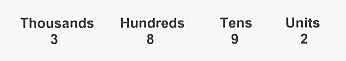

<div id="jsn-maincontent" class="span9 order1 row-fluid">
  <div id="jsn-maincontent_inner">
    <div id="jsn-centercol">
      <div id="jsn-centercol_inner">
        <div id="jsn-mainbody-content" class="jsn-hasmainbody">
          <div id="jsn-mainbody-content-inner1">
            <div id="jsn-mainbody-content-inner2">
              <div id="jsn-mainbody-content-inner3">
                <div id="jsn-mainbody-content-inner4" class="row-fluid">
                  <div id="jsn-mainbody-content-inner" class="span12 order1">
                    <div id="jsn-mainbody">
                      <div id="system-message-container"></div>

                      <div
                        class="item-page"
                        itemscope
                        itemtype="https://schema.org/Article"
                      >
                        <meta itemprop="inLanguage" content="en-GB" />

                        <div itemprop="articleBody">
                          <p></p>
                          <h1 style="text-align: center">
                            An introduction to binary numbers, bits, bytes and
                            words
                          </h1>
                          <p>
                            <strong
                              ><span class="NormalContentHeading"
                                >Introduction</span
                              ></strong
                            ><span class="NormalContent"
                              ><br />
                              Any switch can be in one of two positions, off or
                              on. For example, the switch that controls a light
                              in a room can be off or on. The power switch on
                              your computer can be off or on. A mobile phone has
                              a power switch that can be off or on. The basic
                              building block of any computer is the switch.
                              Computers, however, have millions and millions and
                              millions of electronic switches in them, held in
                              components such as RAM or the processor. When you
                              group these switches together in a certain way,
                              you can represent data, such as letters of the
                              alphabet or numbers!</span
                            >
                          </p>

                          <p>
                            <strong style="line-height: 1.5"
                              ><span class="NormalContentHeading"
                                >The denary numbering system<br /></span></strong
                            >The numbering system that we commonly use every day
                            of our lives is known as the denary system. This is
                            because there are ten digits in use. These are 0, 1,
                            2, 3, 4, 5, 6, 7, 8 and 9. We know that the symbol 7
                            is 'worth more' than the symbol 3. It is not only
                            the size of the number that tells us something about
                            the number, however. It is also the position of each
                            digit relative to any other digits in a number. For
                            example, in the number 268, the 6 is worth a lot
                            more than the 8 because it is to the left of the 8.
                            Similarly, the 2 is worth a lot more than both the 8
                            and the 6 because it is on the very left of the
                            number. When you learnt to count, you will have used
                            headings to start with, to help you understand that
                            the position of each digit is important to the worth
                            of that digit. Any number e.g. 3892 would have been
                            written down under the headings, as shown here.
                          </p>
                          <center>
                            <p class="NormalContent">
                              
                            </p>
                            <p class="NormalContent" align="left">
                              This means the number is 'worth' (3 x 1000) + (8 x
                              100) + (9 x 10) + (2 x 1) which adds up to 3892.
                              Can you use this method to break down the number
                              4390? Now break down the number 28642. What is the
                              next position on the left after thousands worth?
                              What do you think the next position on the right
                              of the Units is worth? (HINT: It is used to
                              represent the fractional parts of a number).
                            </p>
                          </center>
                          <p>
                            <strong
                              ><span class="NormalContentHeading"
                                >The binary numbering system</span
                              ><span class="NormalContent"
                                ><br /> </span></strong
                            ><span class="NormalContent"
                              >Computers use switches. A switch can be off or on
                              and there are no other possible positions. We can
                              represent switches using the binary numbering
                              system. The off position will be represented by 0
                              and the on position will be represented by 1.
                              Whilst the denary numbering system had 10 digits,
                              the binary numbering system has only 2 digits, 0
                              and 1. However, like the denary system, the
                              position of the binary digit (or bit) is
                              important. So for example, the binary number
                              10101101 means</span
                            ><strong
                              ><span class="NormalContent"> <br /> </span
                            ></strong>
                          </p>
                          <center>
                            
                          </center>
                          <p class="NormalContent">
                            This means the number is worth (1 x 128) + (0 x 64)
                            + (1 x 32) + (0 x 16) + (1 x 8) + (1 x 4) + (0 x 2)
                            + (1 x 1) which adds up to the denary number 173.
                            Can you use this method to find out what the denary
                            equivalent of 01100100 is? Can you guess what the
                            next position to the left of the 'One Hundred and
                            twenty eights' position is worth? How about the
                            position to the right of the Units position? (HINT:
                            It is used to represent the fractional parts of a
                            binary number. Try to spot a pattern developing in
                            the worth of each position).
                          </p>
                          <p class="NormalContent">
                            <strong
                              ><span class="NormalContentHeading"
                                >Using subscripts</span
                              ></strong
                            ><br />
                            How do you know whether a number is a binary number
                            (sometimes called a 'base two number') or a denary
                            number (sometimes called a base ten number)? For
                            example, is 1000 the denary number 'one thousand' or
                            the binary number equivalent of eight? It makes a
                            big difference because the denary number will be so
                            much larger than the binary one. To make it clear
                            which numbering system is being used, we can add a
                            subscript to a number. For example:
                          </p>
                          <ul>
                            <li style="list-style-type: none">
                              <ul style="list-style-type: disc">
                                <li class="NormalContent">
                                  10001011<sub>2</sub> is a binary number
                                  whereas 1000101110 is a denary number.
                                </li>
                                <li class="NormalContent">
                                  3452<sub>10</sub> is a denary number.
                                </li>
                                <li class="NormalContent">
                                  10000<sub>10</sub> is a denary number.
                                </li>
                                <li class="NormalContent">
                                  011000<sub>2</sub> is a binary number.
                                </li>
                                <li class="NormalContent">
                                  320000<sub>10</sub> is a denary number.
                                </li>
                                <li class="NormalContent">
                                  01100011<sub>2</sub> is a binary number.
                                </li>
                              </ul>
                            </li>
                          </ul>
                          <p>
                            <span class="NormalContent"
                              >You don't always see subscripts next to a number.
                              For example, when we use base 10 in our normal
                              lives, we don't write a 10 subscript next to the
                              number. We don't because there is usually no
                              confusion possible. Similarly, if we are only
                              using binary numbers, we will omit the 2
                              subscript. There are times, however, when we will
                              be using base 10, base 2 and other numbering
                              systems, all at the same time. In these
                              circumstances, we should make clear which
                              numbering system we are using by employing
                              subscripts.</span
                            >
                          </p>
                          <p>
                            
                          </p>
                          <p>
                            <strong
                              ><span class="NormalContentHeading"
                                >Nibbles and bytes</span
                              ></strong
                            ><span class="NormalContent"
                              ><br />
                              A single bit cannot hold a great range of numbers!
                              It can hold either zero or one. You often read
                              about nibbles. A nibble is a group of 4 bits. The
                              smallest value a nibble can hold is 0000 in binary
                              and the largest number is 1111 in binary. (0000 in
                              binary is the same as 0 in denary. 1111 in binary
                              is the same as (1 x 8) + (1 x 4) + (1 x 2) + (1 x
                              1) or 15 in denary. It is also very common to
                              group bits together in groups of 8. A group of
                              eight bits is known as a byte. Bytes are extremely
                              convenient units to work with, as you will find
                              out on your course.</span
                            >&nbsp;
                          </p>
                          <p>
                            <strong style="line-height: 1.5"
                              ><span class="NormalContentHeading"
                                >Word size<br /></span></strong
                            ><span class="NormalContentHeading"
                              >The number of bits a CPU can work on in one go is
                              called the Word size. Every computer has a Central
                              Processing Unit (CPU) at its heart. This is a
                              digital device. It can only process bits. You may
                              have heard of the expression 16-bit computer,
                              32-bit computer or 64-bit computer, for example.
                              This refers to the word size of the CPU. For
                              example, in a 32-bit computer, the CPU might need
                              to go and get some data from memory and can only
                              use addresses up to 32 bits long. The CPU might
                              need to do some calculations but can only do
                              calculations on 32 bits at a time. Of course, it
                              can work on addresses and numbers longer than 32
                              bits, but it has to do this in more than one go.
                              If the CPU wanted to work on a 64 bit number and
                              it was a 32-bit CPU, for example, it would work on
                              the lower 32 bits first and then the upper 32
                              bits.</span
                            >
                          </p>
                          <p>
                            <strong style="line-height: 1.5"
                              ><span class="NormalContentHeading"
                                >Kilobytes, Megabytes and Gigabytes<br /></span></strong
                            ><span class="NormalContent"
                              >We have seen that a byte can be used to represent
                              a number. We will see soon that the number can be
                              thought of as a code that represents a character
                              on a keyboard. Before we look at that, however, we
                              should note that if one byte is going to represent
                              one character on the keyboard then we are going to
                              have to collect together lots of bytes to record a
                              memo, for example. For that reason, we frequently
                              talk about Kilobytes, Megabytes and
                              Gigabytes.</span
                            >
                          </p>
                          <ul>
                            <li style="list-style-type: none">
                              <ul style="list-style-type: disc">
                                <li class="NormalContent">
                                  - 1 Kilobyte (1 Kbyte) is 1024 bytes exactly,
                                  or 2<sup>10</sup> bytes exactly, or about 1000
                                  bytes, or about a thousand bytes.
                                </li>
                                <li class="NormalContent">
                                  - 1 Megabyte (1 Mbyte) is 1048576 bytes
                                  exactly, or 2<sup>20</sup> bytes exactly, or
                                  about 1000000 bytes, or about a million bytes.
                                </li>
                                <li class="NormalContent">
                                  - 1 Gigabyte (1 Gbyte) is 1073741824 bytes
                                  exactly, 2<sup>30</sup> bytes exactly, or
                                  about 1000000000 bytes, or about a thousand
                                  million bytes.
                                </li>
                              </ul>
                            </li>
                          </ul>
                          <p>
                            <span class="NormalContent"
                              >So 15 Kbytes is about 15 thousand bytes. 128
                              Mbytes is about 128 million bytes. 20 Gbytes is
                              about 20 thousand million bytes. More often than
                              not, you don't need to know the exact number of
                              bytes, just an approximation!</span
                            >
                          </p>
                          <p></p>
                        </div>
                      </div>
                    </div>
                  </div>
                </div>
              </div>
            </div>
          </div>
        </div>
      </div>
    </div>
  </div>
</div>
